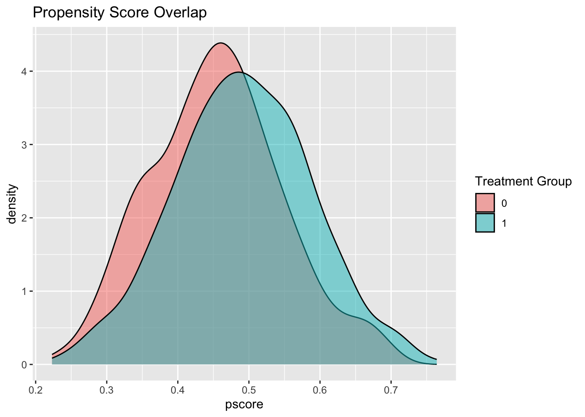

Chapter 5 Causal Inference in Practice IV: Instrumental Variables
5.1 Introduction
Imagine you’re a healthcare researcher trying to determine whether expensive, high-quality hospitals actually improve patient outcomes. The challenge? Patients don’t randomly choose hospitals—wealthier, more health-conscious patients often select premium facilities, making it nearly impossible to separate the hospital’s effect from patient characteristics you can’t measure.
This is the fundamental problem of unmeasured confounding in observational studies. While methods like propensity score matching or Difference-in-Differences address specific scenarios, they rely on strong assumptions that often don’t hold when key confounders remain hidden. Instrumental Variables (IV) estimation offers a clever solution: it leverages exogenous variation—changes that occur “by chance” rather than by choice—to estimate causal effects even when important confounders are unmeasured.
This guide explores IV methodology through a practical healthcare example: estimating how hospital quality affects patient recovery time. We’ll implement the method in R, verify key assumptions, and compare results with simpler approaches. By the end, you’ll understand when and how to apply IV estimation in your own research.
Think of instrumental variables as nature’s randomized experiment. While we can’t randomly assign patients to hospitals, we can exploit factors that create “as good as random” variation in hospital choice. The key insight: if we find something that influences treatment assignment but doesn’t directly affect outcomes, we can use it to isolate the causal effect we’re interested in.
Consider geographic proximity to high-quality hospitals. Patients living closer are more likely to choose these facilities, but distance itself shouldn’t affect recovery (assuming we control for other factors). This creates the variation we need for causal identification.
A valid instrument must satisfy three critical conditions:
- Relevance (Instrument affects treatment): The instrument must meaningfully influence treatment assignment
- Mathematical condition: \(\text{Cov}(Z, D) \neq 0\)
- Practical test: First-stage F-statistic > 10
- Example: Distance to high-quality hospital affects hospital choice
- Exclusion Restriction (Instrument affects outcome only through treatment): The instrument cannot have direct pathways to the outcome
- Mathematical condition: \(Y = f(D, X, \varepsilon)\) with \(Z \notin f\)
- Practical consideration: Requires subject matter expertise and careful reasoning
- Example: Distance affects recovery only by influencing hospital choice, not through other channels
- Independence (Instrument is exogenous): The instrument must be uncorrelated with unmeasured confounders
- Mathematical condition: \(Z \perp \{Y(1), Y(0)\} \mid X\)
- Practical consideration: Often the most challenging assumption to defend
- Example: After controlling for observables, distance is unrelated to patient health consciousness
Unlike randomized trials that estimate population-wide effects, IV identifies the Local Average Treatment Effect—the causal effect for “compliers,” individuals whose treatment status is influenced by the instrument. This is both a strength (we get unbiased causal estimates) and a limitation (results may not generalize to the full population).
For binary instruments and treatments, the IV estimand is elegantly simple:
\[\widehat{\text{LATE}} = \frac{\mathbb{E}[Y \mid Z = 1] - \mathbb{E}[Y \mid Z = 0]}{\mathbb{E}[D \mid Z = 1] - \mathbb{E}[D \mid Z = 0]}\]
This ratio scales the “reduced-form” effect (instrument → outcome) by the “first-stage” effect (instrument → treatment). The intuition: we divide the total effect of the instrument on outcomes by how much the instrument changes treatment uptake.
When dealing with continuous variables or multiple covariates, we use Two-Stage Least Squares (2SLS):
First Stage: Predict treatment using the instrument and controls \[D_i = \pi_0 + \pi_1 Z_i + \pi_2^\top X_i + \nu_i\]
Second Stage: Use predicted treatment values to estimate the causal effect \[Y_i = \alpha_0 + \alpha_1 \hat{D}_i + \alpha_2^\top X_i + \varepsilon_i\]
The coefficient \(\alpha_1\) provides our LATE estimate, robust to unmeasured confounding under valid IV assumptions.
| Method | Assumption | Effect Estimated | Strengths | Limitations |
|---|---|---|---|---|
| IV | Valid instrument | LATE (compliers only) | Handles unmeasured confounding | Requires strong instrument; limited generalizability |
| Propensity Scores | Conditional ignorability | ATE/ATT | Intuitive; broad applicability | Assumes all confounders observed |
| Difference-in-Differences | Parallel trends | ATT | Natural experiments | Time-varying confounding issues |
5.2 Healthcare Case Study: Hospital Quality and Recovery Time
Objective: Estimate the causal effect of hospital quality on post-surgical recovery time
Treatment: \(D_i = 1\) for high-quality hospitals, \(D_i = 0\) for standard hospitals
Outcome: \(Y_i\) = recovery time in days (lower is better)
Instrument: \(Z_i = 1\) if patient lives within 10 miles of a high-quality hospital
The Confounding Problem: Patients choosing high-quality hospitals may differ systematically in unmeasured ways (health consciousness, social support, etc.) that also affect recovery.
- Assumption Verification
Relevance: We expect proximity to strongly predict hospital choice. Patients prefer nearby facilities due to convenience, familiarity, and reduced travel burden.
Exclusion Restriction: Distance affects recovery only through hospital choice, not via: - Local healthcare infrastructure quality - Air quality or environmental factors - Socioeconomic clustering (controlled for through observables)
Independence: After controlling for income, education, and urban/rural status, proximity should be uncorrelated with unmeasured health behaviors.
5.2.1 R Implementation
Let’s implement IV estimation with simulated data that mirrors real-world healthcare scenarios:
# Load required packages
if (!requireNamespace("AER", quietly = TRUE)) install.packages("AER")
if (!requireNamespace("ggplot2", quietly = TRUE)) install.packages("ggplot2")
if (!requireNamespace("dplyr", quietly = TRUE)) install.packages("dplyr")
library(AER)## Loading required package: car## Loading required package: carData##
## Attaching package: 'car'## The following object is masked from 'package:dplyr':
##
## recode## The following object is masked from 'package:purrr':
##
## some## Loading required package: lmtest## Loading required package: zoo##
## Attaching package: 'zoo'## The following objects are masked from 'package:base':
##
## as.Date, as.Date.numeric## Loading required package: sandwichlibrary(ggplot2)
library(dplyr)
# Set parameters for reproducible simulation
set.seed(123)
n <- 1000 # Sample size
p <- 5 # Number of covariates
# Generate realistic patient characteristics
X <- matrix(rnorm(n * p), nrow = n)
colnames(X) <- c("age", "income", "education", "comorbidities", "urban")
# Instrument: Geographic proximity (exogenous after controlling for observables)
proximity_prob <- plogis(-0.5 + 0.3 * X[, "urban"] + 0.1 * X[, "income"])
Z <- rbinom(n, 1, proximity_prob)
# Treatment: Hospital choice (influenced by proximity and patient characteristics)
# Strong first stage ensures instrument relevance
hospital_choice_prob <- plogis(-0.5 + 1.2 * Z + 0.3 * X[, "income"] +
0.2 * X[, "education"] + 0.1 * X[, "urban"])
D <- rbinom(n, 1, hospital_choice_prob)
# Outcome: Recovery time with unmeasured confounding
# Unmeasured confounder: health consciousness (affects both hospital choice and recovery)
health_consciousness <- rnorm(n, mean = 0.2 * X[, "education"] + 0.1 * X[, "income"])
# True causal effect: -4 days for high-quality hospitals
true_late <- -4
recovery_time <- 25 + true_late * D +
2 * X[, "age"] +
1.5 * X[, "comorbidities"] +
2 * health_consciousness + # Unmeasured confounder
rnorm(n, sd = 3)
# Create analysis dataset
data <- data.frame(
recovery_time = recovery_time,
hospital_quality = D,
proximity = Z,
age = X[, "age"],
income = X[, "income"],
education = X[, "education"],
comorbidities = X[, "comorbidities"],
urban = X[, "urban"]
)
# Step 1: Check instrument relevance (First Stage)
first_stage <- lm(hospital_quality ~ proximity + age + income + education +
comorbidities + urban, data = data)
first_stage_summary <- summary(first_stage)
f_stat <- first_stage_summary$fstatistic[1]
cat("=== FIRST STAGE DIAGNOSTICS ===\n")## === FIRST STAGE DIAGNOSTICS ===## First-stage F-statistic: 19.19## Rule of thumb: F > 10 indicates strong instrument## Proximity coefficient: 0.241## P-value: 0# Step 2: Two-Stage Least Squares estimation
iv_model <- ivreg(recovery_time ~ hospital_quality + age + income + education +
comorbidities + urban | proximity + age + income + education +
comorbidities + urban, data = data)
iv_summary <- summary(iv_model)
# Step 3: Wald estimator (simple version without covariates)
reduced_form <- lm(recovery_time ~ proximity, data = data)
first_stage_simple <- lm(hospital_quality ~ proximity, data = data)
wald_estimate <- coef(reduced_form)["proximity"] / coef(first_stage_simple)["proximity"]
# Step 4: Naive OLS (biased due to unmeasured confounding)
ols_model <- lm(recovery_time ~ hospital_quality + age + income + education +
comorbidities + urban, data = data)
# Display results
cat("=== ESTIMATION RESULTS ===\n")## === ESTIMATION RESULTS ===## True LATE (simulation parameter): -4 days## 2SLS estimate: -4.78 days## 2SLS standard error: 1.01## Wald estimate: -4.53 days## Naive OLS estimate: -3.83 days# Create visualization
estimates_df <- data.frame(
Method = c("2SLS", "Wald", "OLS", "True LATE"),
Estimate = c(
coef(iv_summary)["hospital_quality", "Estimate"],
wald_estimate,
coef(ols_model)["hospital_quality"],
true_late
),
SE = c(
coef(iv_summary)["hospital_quality", "Std. Error"],
NA,
summary(ols_model)$coefficients["hospital_quality", "Std. Error"],
NA
)
) %>%
mutate(
Lower = Estimate - 1.96 * SE,
Upper = Estimate + 1.96 * SE,
Color = case_when(
Method == "True LATE" ~ "Truth",
Method %in% c("2SLS", "Wald") ~ "IV Methods",
TRUE ~ "Biased"
)
)
# Enhanced visualization
ggplot(estimates_df, aes(x = Method, y = Estimate, fill = Color)) +
geom_col(alpha = 0.7, width = 0.6) +
geom_errorbar(aes(ymin = Lower, ymax = Upper), width = 0.2,
color = "black", na.rm = TRUE) +
geom_hline(yintercept = true_late, linetype = "dashed",
color = "red", size = 1) +
scale_fill_manual(values = c("IV Methods" = "#2E86AB",
"Biased" = "#A23B72",
"Truth" = "#F18F01")) +
labs(
title = "Hospital Quality Effect on Recovery Time",
subtitle = "Comparison of estimation methods with 95% confidence intervals",
y = "Effect on Recovery Time (Days)",
x = "Estimation Method",
fill = "Method Type",
caption = "Dashed line shows true causal effect"
) +
theme_minimal() +
theme(
plot.title = element_text(size = 14, face = "bold"),
axis.text.x = element_text(angle = 45, hjust = 1),
legend.position = "bottom"
)## Warning: Using `size` aesthetic for lines was deprecated in ggplot2 3.4.0.
## ℹ Please use `linewidth` instead.
## This warning is displayed once every 8 hours.
## Call `lifecycle::last_lifecycle_warnings()` to see where this warning was generated.
5.2.2 Interpreting the Results
First-Stage Strength: The F-statistic tests instrument relevance. Values above 10 indicate a strong instrument; above 20 is considered very strong. Weak instruments (F < 10) lead to biased and imprecise estimates.
Estimate Comparison: In our simulation: - 2SLS should recover the true LATE (-4 days) with appropriate uncertainty - Wald estimator provides similar point estimates but may be less precise without covariate adjustment - Naive OLS typically shows bias toward zero due to unmeasured confounding
The 2SLS coefficient represents the LATE: the expected reduction in recovery time for patients whose hospital choice is influenced by proximity. This effect applies specifically to “compliers”—patients who would choose high-quality hospitals when living nearby but standard hospitals when living far away.
Confidence intervals reflect estimation uncertainty. Wide intervals may indicate weak instruments, small sample sizes, or high outcome variability.
- Common Threats to Validity
Weak Instruments: Low first-stage F-statistics indicate insufficient variation in treatment driven by the instrument
Exclusion Restriction Violations: Distance might affect recovery through:
- Proximity to other medical facilities
- Socioeconomic sorting by geography
- Environmental factors correlated with location
Independence Violations: Systematic differences between near/far patients in unmeasured characteristics
5.2.3 Robustness Checks
## === BALANCE CHECK ===balance_test <- t.test(data$income[data$proximity == 1],
data$income[data$proximity == 0])
cat("Income difference by proximity (p-value):", round(balance_test$p.value, 3), "\n")## Income difference by proximity (p-value): 0# Examine complier population size
complier_share <- (mean(data$hospital_quality[data$proximity == 1]) -
mean(data$hospital_quality[data$proximity == 0]))
cat("Estimated complier share:", round(complier_share * 100, 1), "%\n")## Estimated complier share: 26.7 %5.3 Practical Considerations and Extensions
5.3.1 When to Use IV
Ideal scenarios: - Strong theoretical justification for instrument validity - Unmeasured confounding is suspected - Natural experiments or policy discontinuities create exogenous variation
Proceed with caution when: - Instruments are weak (F < 10) - Exclusion restriction is questionable - Treatment effects are highly heterogeneous
5.4 Conclusion
Instrumental Variables estimation provides a powerful approach for causal inference when unmeasured confounding threatens validity. Through our healthcare example, we’ve seen how geographic proximity can serve as an instrument to estimate hospital quality effects on recovery time.
The method’s strength lies in its ability to handle hidden bias, but this comes with important trade-offs: the need for valid instruments and interpretation limited to complier populations. Success depends critically on careful instrument selection, thorough assumption verification, and honest assessment of potential violations.
When applied thoughtfully with domain expertise, IV estimation can reveal causal relationships that would otherwise remain hidden in observational data, making it an invaluable tool for researchers tackling complex real-world questions.
5.5 Further Reading
- Angrist, J. D., & Pischke, J.-S. (2009). Mostly Harmless Econometrics: An Empiricist’s Companion. Princeton University Press.
- Hernán, M. A., & Robins, J. M. (2020). Causal Inference: What If. Chapman & Hall/CRC.
- Imbens, G. W., & Rubin, D. B. (2015). Causal Inference for Statistics, Social, and Biomedical Sciences. Cambridge University Press.